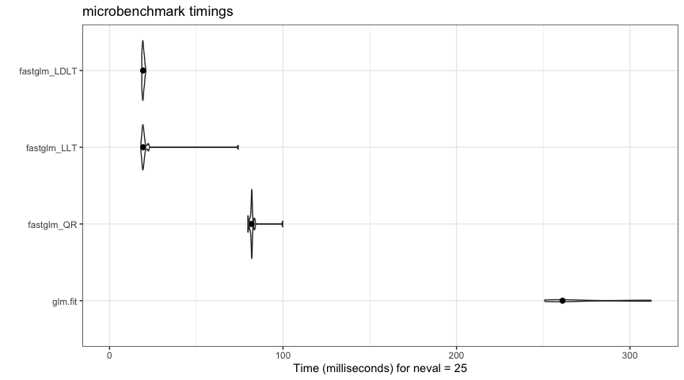
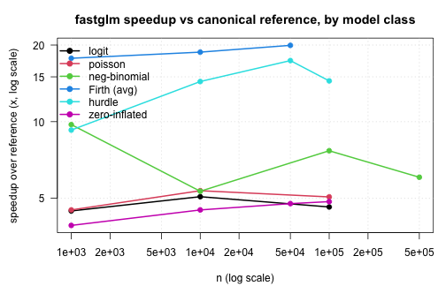

The fastglm package is a fast and stable alternative to stats::glm() for fitting generalized linear models. It is built on RcppEigen and is fully compatible with R’s family objects: the downstream methods you expect (summary(), vcov(), predict(), coef(), residuals(), logLik()) all work exactly as they do for a glm.
Beyond standard GLMs, fastglm provides dedicated fitting functions for negative-binomial regression, hurdle and zero-inflated count models, and Firth bias-reduced GLMs, all of which reuse the same C++ IRLS solver.
Features
- Six decomposition methods for the IRLS weighted least-squares step: column-pivoted QR (default, rank-revealing), unpivoted QR, LLT Cholesky, LDLT Cholesky, full-pivoted QR, and bidiagonal divide-and-conquer SVD.
- Robust convergence via step-halving safeguard following Marschner (2011), with better-initialized starting values than
glm()orglm2(). - Large scale data features: Sparse design matrices (
Matrix::dgCMatrix), on-discbig.matrixobjects (bigmemory), and a streaming callback interface (fastglm_streaming()) for fitting on data that does not fit in memory. - Firth bias-reduced GLMs (
firth = TRUE) implementing the AS_mean adjustment of Kosmidis and Firth (2009, 2021) for all standard families, all six decomposition methods, and all three large-data paths. - Negative-binomial regression (
fastglm_nb()) with joint(beta, theta)MLE entirely in C++. - Hurdle count models (
fastglm_hurdle()) with Poisson or NB count components and a binary zero/non-zero component. - Zero-inflated count models (
fastglm_zi()) with Poisson or NB count distributions, fit by an EM algorithm in C++. - Inference:
vcov(),summary(),predict(se.fit = TRUE), and compatibility withsandwich::vcovHC()andsandwich::vcovCL()for robust standard errors.
Installation
Install from CRAN:
install.packages("fastglm")or the development version from GitHub:
pak::pak("jaredhuling/fastglm")Fitting a GLM
The main function is fastglm(). It takes a numeric design matrix x, a response y, and an R family object:
library(fastglm)
data(esoph)
x <- model.matrix(~ agegp + unclass(tobgp) + unclass(alcgp), data = esoph)
y <- cbind(esoph$ncases, esoph$ncontrols)
fit <- fastglm(x, y, family = binomial(link = "cloglog"))
summary(fit)
#>
#> Call:
#> fastglm.default(x = x, y = y, family = binomial(link = "cloglog"))
#>
#> Coefficients:
#> Estimate Std. Error z value Pr(>|z|)
#> (Intercept) -4.29199 0.29777 -14.414 < 2e-16 ***
#> agegp.L 3.30677 0.63454 5.211 1.88e-07 ***
#> agegp.Q -1.35525 0.57310 -2.365 0.018 *
#> agegp.C 0.20296 0.43333 0.468 0.640
#> agegp^4 0.15056 0.29318 0.514 0.608
#> agegp^5 -0.23425 0.17855 -1.312 0.190
#> unclass(tobgp) 0.33276 0.07285 4.568 4.93e-06 ***
#> unclass(alcgp) 0.80384 0.07538 10.664 < 2e-16 ***
#> ---
#> Signif. codes: 0 '***' 0.001 '**' 0.01 '*' 0.05 '.' 0.1 ' ' 1
#>
#> (Dispersion parameter for binomial family taken to be 1)
#>
#> Null deviance: 61.609 on 87 degrees of freedom
#> Residual deviance: 96.950 on 80 degrees of freedom
#> AIC: 228
#>
#> Number of Fisher Scoring iterations: 6fastglm() operates on a pre-built design matrix. To use a formula and a data frame, pass fastglm_fit as the fitting function to base glm():
fit2 <- glm(cbind(ncases, ncontrols) ~ agegp + unclass(tobgp) + unclass(alcgp),
data = esoph, family = binomial(link = "cloglog"),
method = fastglm_fit)A third, minimal-use function, fastglmPure(), returns only the coefficient vector and working quantities, skipping dispersion, AIC, and null-deviance computation. Use this when calling fastglm from another package and you only need the coefficients.
Decomposition methods
The IRLS algorithm reduces every iteration to a weighted least-squares problem. fastglm supports six different matrix decompositions for solving that WLS step, all from RcppEigen (Bates and Eddelbuettel, 2013); the choice trades off speed against numerical stability and rank-revealing behavior:
method |
decomposition |
|---|---|
0 |
column-pivoted Householder QR (default; rank-revealing) |
1 |
unpivoted Householder QR |
2 |
LLT Cholesky |
3 |
LDLT Cholesky |
4 |
full-pivoted Householder QR |
5 |
bidiagonal divide-and-conquer SVD |
The default (method = 0) is the safe choice: it is rank-revealing, so it handles aliased or collinear columns gracefully. The Cholesky methods (2 and 3) are roughly 3–4x faster but assume full column rank.
set.seed(123)
n <- 5000; p <- 30
x <- matrix(rnorm(n * p), n, p)
y <- rbinom(n, 1, plogis(x %*% rnorm(p) * 0.05))
system.time(f0 <- fastglm(x, y, family = binomial())) # default QR
#> user system elapsed
#> 0.004 0.000 0.005
system.time(f2 <- fastglm(x, y, family = binomial(), method = 2)) # LLT
#> user system elapsed
#> 0.002 0.000 0.002Speed
fastglm runs the same IRLS algorithm as glm.fit() but executes the per-iteration WLS solve in C++ via RcppEigen, which is often substantially faster than the compiled-R + LAPACK path that glm.fit() uses. The gap widens with sample size because the R-side overhead in glm.fit() is fixed per iteration:
library(microbenchmark)
library(ggplot2)
set.seed(123)
n.obs <- 10000
n.vars <- 100
x <- matrix(rnorm(n.obs * n.vars, sd = 3), n.obs, n.vars)
y <- 1 * (drop(x[, 1:25] %*% runif(25, -0.1, 0.1)) > rnorm(n.obs))
ct <- microbenchmark(
glm.fit = glm.fit(x, y, family = binomial()),
fastglm_QR = fastglm(x, y, family = binomial(), method = 0),
fastglm_LLT = fastglm(x, y, family = binomial(), method = 2),
fastglm_LDLT = fastglm(x, y, family = binomial(), method = 3),
times = 25L
)
autoplot(ct, log = FALSE) +
ggplot2::stat_summary(fun = median, geom = 'point', size = 2) +
ggplot2::theme_bw()
Coefficient estimates agree with glm.fit() to floating-point precision:
gl <- glm.fit(x, y, family = binomial())
c(fastglm_QR = max(abs(coef(gl) - coef(fastglm(x, y, family = binomial(), method = 0)))),
fastglm_LLT = max(abs(coef(gl) - coef(fastglm(x, y, family = binomial(), method = 2)))),
fastglm_LDLT = max(abs(coef(gl) - coef(fastglm(x, y, family = binomial(), method = 3)))))
#> fastglm_QR fastglm_LLT fastglm_LDLT
#> 1.360023e-15 1.249001e-15 1.165734e-15Stability
fastglm does not compromise computational stability for speed. It uses a step-halving safeguard following Marschner (2011) and starts from better-initialized values than glm() or glm2::glm2(), so it tends to converge in cases where the standard IRLS algorithm fails. As an example, consider a Gamma model with a sqrt link — a mild response misspecification combined with a badly misspecified link. In such scenarios the standard IRLS algorithm tends to have convergence issues:
set.seed(1)
x <- matrix(rnorm(10000 * 100), ncol = 100)
y <- (exp(0.25 * x[,1] - 0.25 * x[,3] + 0.5 * x[,4] - 0.5 * x[,5] + rnorm(10000))) + 0.1
gfit1 <- glm(y ~ x, family = Gamma(link = "sqrt"), method = fastglm_fit)
gfit2 <- glm(y ~ x, family = Gamma(link = "sqrt"))
## fastglm converges with a higher likelihood
c(fastglm_converged = gfit1$converged, glm_converged = gfit2$converged)
#> fastglm_converged glm_converged
#> TRUE FALSE
c(fastglm_logLik = logLik(gfit1), glm_logLik = logLik(gfit2))
#> fastglm_logLik glm_logLik
#> -16046.66 -16704.05See vignette("fastglm", package = "fastglm") for the full comparison, including glm2::glm2() and speedglm.
Native C++ families
For the most commonly used family/link combinations, fastglm dispatches variance(), mu.eta(), linkinv(), and dev.resids() to inline C++ implementations rather than calling back into R once per IRLS iteration. The covered combinations are:
- gaussian (identity, log, inverse)
- binomial (logit, probit, cloglog, log)
- poisson (log, identity, sqrt)
- Gamma (log, inverse, identity)
- inverse.gaussian (1/mu^2, log, identity, inverse)
Detection is automatic: if the family object matches one of the above, the native path is used; otherwise fastglm falls back to the R-callback path. The C++ native approach is meaningfully faster on large n because it eliminates the per-iteration calls to R for each of the four family functions.
Sparse, big.matrix, and streaming designs
For designs that are sparse, that live on disc, or that have to be built from a parquet / arrow / DuckDB source, fastglm provides three large-data paths that share a common streaming kernel and produce identical results:
-
Matrix::dgCMatrix: pass directly tofastglm(). Useful for one-hot encoded categoricals and high-dimensional sparse designs. -
bigmemory::big.matrix: pass directly tofastglm(). The matrix is read in row-blocks and never fully materialized in memory. -
fastglm_streaming(chunk_callback, n_chunks, family): a user-supplied closure yields one row-block per call. The right path for fitting on a parquet dataset, DuckDB query, or any external columnar store.
A short example of the streaming computation approach:
n <- 4000
X <- cbind(1, matrix(rnorm(n * 3), n, 3))
y <- rbinom(n, 1, plogis(X %*% c(0.2, 0.4, -0.2, 0.3)))
chunk_size <- 1000
chunks <- function(k) {
idx <- ((k - 1) * chunk_size + 1):(k * chunk_size)
list(X = X[idx, , drop = FALSE], y = y[idx])
}
fit_stream <- fastglm_streaming(chunks, n_chunks = 4, family = binomial())
fit_full <- fastglm(X, y, family = binomial(), method = 2)
max(abs(coef(fit_stream) - coef(fit_full)))
#> [1] 1.042751e-07See vignette("large-data-fastglm", package = "fastglm") for a detailed walk-through of all three paths.
Extended models
Negative-binomial regression
fastglm_nb() fits negative-binomial regression with the dispersion theta estimated jointly with the regression coefficients, in the spirit of MASS::glm.nb(). The joint (beta, theta) MLE runs entirely in C++; IRLS for beta, Brent’s method for theta:
set.seed(123)
n <- 5000
X <- cbind(1, matrix(rnorm(n * 3), n, 3))
mu <- exp(X %*% c(0.5, 0.4, -0.2, 0.3))
y <- MASS::rnegbin(n, mu = mu, theta = 2)
f_nb <- fastglm_nb(X, y)
c(coef = coef(f_nb), theta = f_nb$theta)
#> coef.x1 coef.x2 coef.x3 coef.x4 theta
#> 0.4926199 0.3862258 -0.2200450 0.2991296 1.9923309Hurdle models
fastglm_hurdle() fits a two-part count model: a binary regression for whether y > 0, plus a zero-truncated Poisson or NB regression on the positive subset. The two parts factorize and both are fit by the same C++ IRLS solver. This is the same model as pscl::hurdle() (Zeileis, Kleiber, and Jackman, 2008). Different designs for the count and zero parts are specified via the Formula package’s two-RHS syntax:
set.seed(123)
n <- 5000
x1 <- rnorm(n); x2 <- rnorm(n)
lam <- exp(0.7 + 0.4 * x1 - 0.3 * x2)
is_pos <- rbinom(n, 1, plogis(-0.4 + 0.5 * x1 + 0.2 * x2))
yt <- integer(n)
for (i in seq_len(n)) {
repeat { v <- rpois(1, lam[i]); if (v > 0) { yt[i] <- v; break } }
}
y <- ifelse(is_pos == 1, yt, 0L)
f_h <- fastglm_hurdle(y ~ x1 + x2, data = data.frame(y, x1, x2), dist = "poisson")
coef(f_h)
#> count_(Intercept) count_x1 count_x2 zero_(Intercept)
#> 0.6793788 0.4162547 -0.3137229 -0.3767285
#> zero_x1 zero_x2
#> 0.4447325 0.1999711Zero-inflated models
fastglm_zi() fits a zero-inflated Poisson or NB regression, a binary inflation component overlaid on the original count distribution, fit by an EM algorithm in C++ with closed-form posterior responsibilities and an analytical observed-information vcov. This is the same model as pscl::zeroinfl():
set.seed(123)
n <- 5000
x1 <- rnorm(n); x2 <- rnorm(n)
eta_c <- 0.7 + 0.4 * x1 - 0.3 * x2
eta_z <- -0.4 + 0.5 * x1 + 0.2 * x2
z <- rbinom(n, 1, plogis(eta_z))
y <- ifelse(z == 1, 0L, rpois(n, exp(eta_c)))
f_zi <- fastglm_zi(y ~ x1 + x2, data = data.frame(y, x1, x2), dist = "poisson")
coef(f_zi)
#> count_(Intercept) count_x1 count_x2 zero_(Intercept)
#> 0.6647396 0.3965153 -0.3407168 -0.3750258
#> zero_x1 zero_x2
#> 0.4512788 0.1819040Firth bias-reduced GLMs
Setting firth = TRUE activates the general mean-bias reduction of Kosmidis and Firth (2009, 2021). This extends Firth’s (1993) original logistic penalty to arbitrary GLM families, producing finite estimates even under separation and removing the leading bias from maximum likelihood estimates:
data(sex2, package = "logistf")
X <- model.matrix(~ age + oc + vic + vicl + vis + dia, data = sex2)
y <- sex2$case
f_firth <- fastglm(X, y, family = binomial(), firth = TRUE)
coef(f_firth)
#> (Intercept) age oc vic vicl vis
#> 0.12025405 -1.10598133 -0.06881673 2.26887465 -2.11140819 -0.78831695
#> dia
#> 3.09601183Firth bias reduction works with all six decomposition methods, all standard R families and link functions, and all three large-data paths (sparse, big.matrix, streaming). See vignette("firth-fastglm", package = "fastglm") for verification against logistf::logistf() and brglm2::brglmFit().
Inference
The fitted object stores the unscaled covariance directly, so vcov() and summary() work as expected. Heteroskedasticity-consistent and cluster-robust covariance matrices are available via sandwich::vcovHC() and sandwich::vcovCL(), fastglm registers methods on those generics, so loading sandwich is all that is required:
library(sandwich)
V_hc <- vcovHC(fit, type = "HC0")
V_cl <- vcovCL(fit, cluster = cluster, type = "HC1")Results are numerically identical to sandwich applied to a glm fit to floating-point precision. predict() supports se.fit = TRUE:
predict(fit, newdata = xnew, type = "response", se.fit = TRUE)Benchmarks
A comprehensive benchmarking study is available in vignette("benchmarks-fastglm", package = "fastglm"), comparing fastglm against the canonical reference implementations across standard GLMs (glm.fit, glm2, speedglm), negative-binomial regression (MASS::glm.nb), Firth bias-reduced GLMs (brglm2, logistf), and hurdle / zero-inflated count regressions (pscl::hurdle, pscl::zeroinfl).
The following summary plot shows the speedup fastglm delivers over the canonical reference for each model class, as a function of sample size. The reference for the standard GLMs is the fastest among glm.fit, glm2, and speedglm, so the comparison is conservative. Larger is better:

Across all model classes the same picture holds: fastglm matches the canonical reference implementation to floating-point precision, and the runtime gap grows with sample size. By the speedup is generally an order of magnitude or more. For models with an outer iteration (NB joint MLE, hurdle/ZI with NB), the gap is widest, since the entire outer loop is in C++ in fastglm and entirely in R in the reference implementations.
References
Firth, D. (1993). Bias reduction of maximum likelihood estimates. Biometrika, 80(1), 27–38.
Kosmidis, I. and Firth, D. (2009). Bias reduction in exponential family nonlinear models. Biometrika, 96(4), 793–804.
Kosmidis, I. and Firth, D. (2021). Jeffreys-prior penalty, finiteness and shrinkage in binomial-response generalized linear models. Biometrika, 108(1), 71–82.
Marschner, I. C. (2011). glm2: Fitting generalized linear models with convergence problems. The R Journal, 3(2), 12–15.
Bates, D. and Eddelbuettel, D. (2013). Fast and elegant numerical linear algebra using the RcppEigen package. Journal of Statistical Software, 52(5), 1–24.
Zeileis, A., Kleiber, C., and Jackman, S. (2008). Regression models for count data in R. Journal of Statistical Software, 27(8), 1–25.